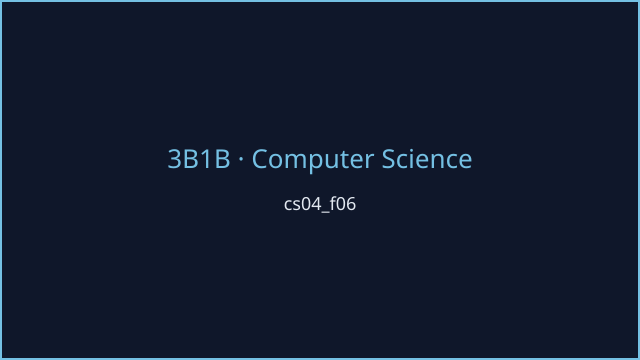

ওয়ার্ডলে আমরা ছয় বারে একটি পাঁচ-অক্ষরের শব্দ গুশে করি। প্রতিটি অনুমানের পর সবুজ, হলুদ ও ধূসর রঙ আমাদের কিছু তথ্য দেয়। প্রশ্ন হলো—কোন শব্দ দিয়ে শুরু করলে গড়ে সবচেয়ে বেশি তথ্য পাওয়া যায়?
কোন অনুমান সবচেয়ে ''তথ্যবহুল?' এর উত্তর দিতে আমাদের লাগবে শ্যাননের এন্ট্রপি।
প্রতিটি অনুমানের ফলাফল একাধিক ''প্যাটার্ন''-এর একটি। যদি কোনো প্যাটার্ন খুব সম্ভাবনাময় হয়, সেটি কম তথ্য দেয়; বিরল প্যাটার্ন বেশি তথ্য দেয়। গড় তথ্য লাভ হলো সম্ভাবনা দ্বারা ওজন করা বিস্ময়।
অর্থাৎ যে অনুমানের ফলাফলগুলোর বন্টন যত ''সমান'', সেটি তত বেশি তথ্য দেয়—ঠিক যেমন সমান সম্ভাবনার এন্ট্রপি সর্বোচ্চ।
প্রতিটি সম্ভাব্য প্রথম শব্দের জন্য আমরা সমস্ত উত্তর শব্দের বিরুদ্ধে তার প্যাটার্ন বন্টন বের করি, তারপর এন্ট্রপি হিসাব করি। যে শব্দের এন্ট্রপি সবচেয়ে বেশি, সেটিই সেরা প্রথম অনুমান।
গণনায় দেখা যায় ''crane''-এর মতো শব্দের প্রথম ধাপে প্রায় ৫.৯ বিট তথ্য পাওয়া যায়—যা তথ্য তত্ত্বের সর্বোচ্চ সীমার কাছাকাছি। এর কারণ হলো এর অক্ষরগুলো সাধারণ এবং সুবিতরিত।
তবে শুধু তথ্য লাভই সব কিছু নয়—পরের পাঠে আমরা দেখব এই ''সেরা'' শব্দের ধারণা কীভাবে বদলায়।
সর্বোচ্চ এন্ট্রপি নির্বাচন একটি ''দ্বাপদ'' কৌশল—এটি গড়ে ভালো করলেও প্রতিটি খেলায় সেরা নয়। বাস্তবে খেলার গভীরতা ও শেষ উত্তরের সম্ভাবনাও বিবেচনা করতে হয়।
তথ্য তত্ত্ব আমাদের এক ''নীতি'' দেয়, কিন্তু সেই নীতিটি কখন ভুল—তা নিয়ে পরবর্তী পাঠ।
নিচের ইন্টারেক্টিভ উপাদান ও কুইজের মাধ্যমে পাঠের ধারণা নিজে যাচাই করুন।
